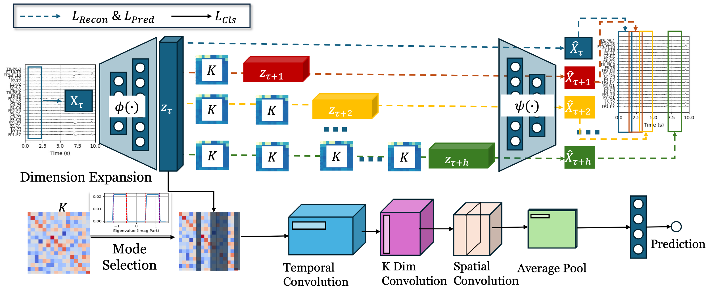

IEEE BIBM 2026 · Session S3, Biomedical Signal Analysis
KSNet: Learning InterpretableKoopmanSpectral Representations for EEG Seizure Prediction
Seizure prediction asks whether the half hour before a seizure looks different
Koopman theory turns nonlinear dynamics into a linear map you can read
KSNet learns K from EEG, then classifies with the modes it selects
Our work · Published, BIBM 2026The full KSNet architecture
Our work · Published, BIBM 2026
Under segment level cross validation, KSNet beats eleven baselines on both datasets
Our work · Published, BIBM 2026Trained on each phase alone, the two models learn different spectra
Our work · Published, BIBM 2026The paper figure for both datasets
Our work · Published, BIBM 2026

Then we asked a rude question: what if the model never sees the EEG?
Our follow up, all 10 s clips every 30 s, 17 CHB-MIT and 12 SIENA patients, details in backup
Labels come in blocks, so a random split lets the model copy its neighbor
Mormann et al., Brain 2007our follow up on CHB-MIT, 8 to 17 patients per level
The audit ladder in numbers
Our follow up, run 2026-11-17, preregistered predictions A1 to A3 all held
A strict test with fake seizure times caught three shortcuts we had trusted
Our work · In progressUnder the strict test, every method sits between 0.48 and 0.64, deep models included
Our work · In progressWang et al., CBraMod, ICLR 2025our round 11, held out calibration, shared windows and fake seizures
Plugged into a CNN and a foundation model, the Koopman feature still adds
Our work · In progressOur round 11, preregistered, development set (these patients were seen in earlier rounds)
The fewer seizures a patient has, the more the Koopman feature helps
Our work · Exploratory, post hocOur analysis of round 11 scores, split after the fact. Confirmation on HUP Phase II (ieeg.org) is being set up
Confirmation set: HUP Phase II on ieeg.org
Our work · In progressOur scan 2026-11-25, metadata only, prereg amendment pending
The spectrum does not tip toward instability before seizures, at least not for everyone
KSNet, neural fragility and DMD are one family, and that helps beyond prediction
Koopman spectra help most where labels are scarce, if the test is honest
Slides: scan, or zhiqian.ai, then Talks